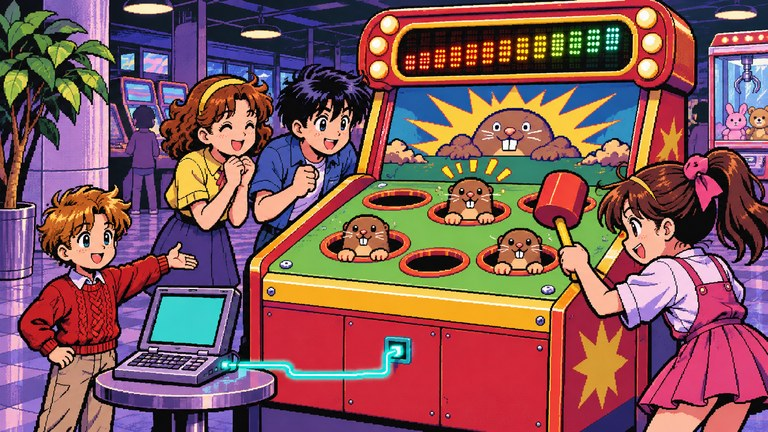
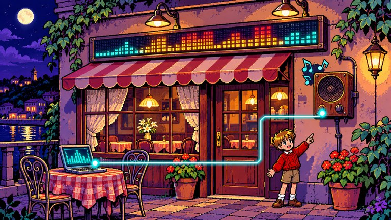
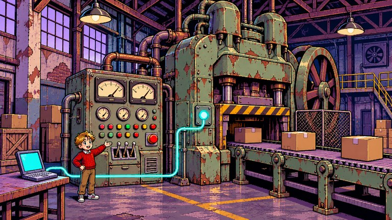
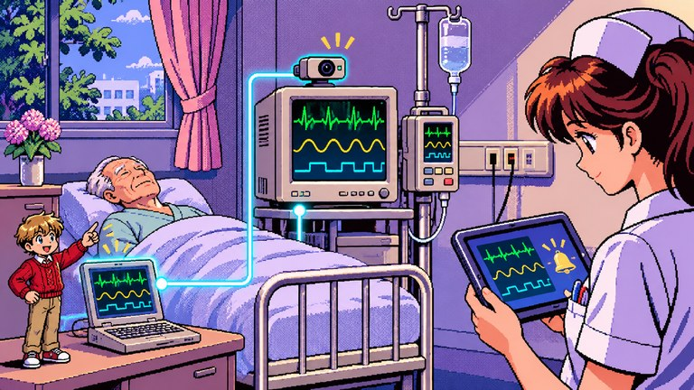
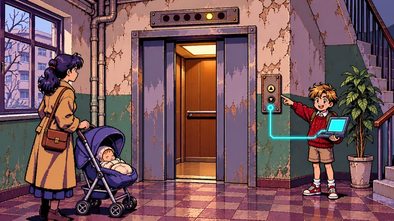
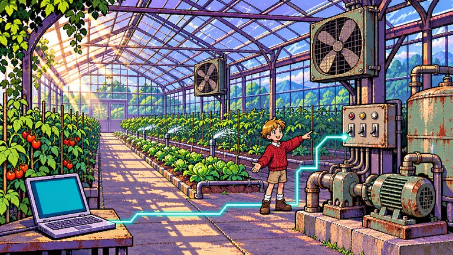
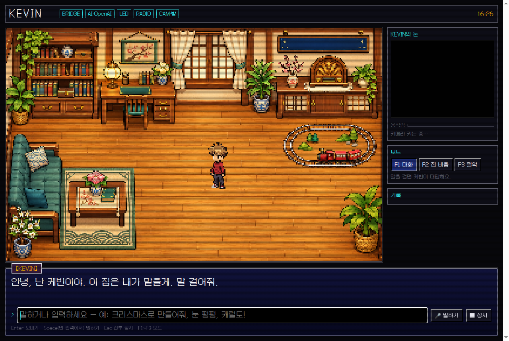
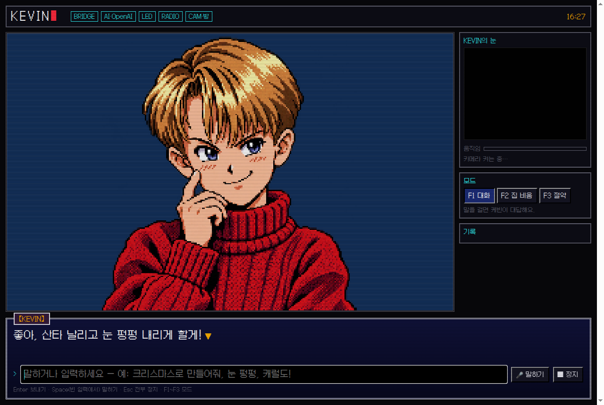
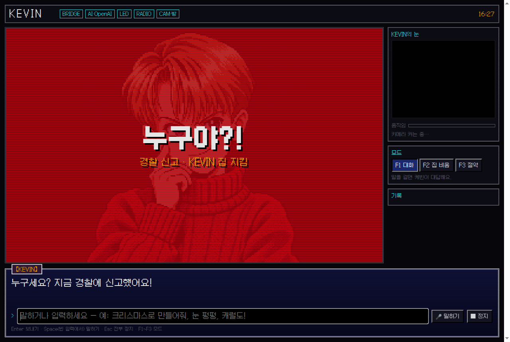

두더지게임 · 오락실
게임 진행 · 점수판 · 효과음 연결
앱도, API도 없는 기기를 AI의 도구로.
기존 기기를 보고, 움직이고, 결과를 확인하는 AI 실행 계층입니다.
시연 앱은 MSI 브리지와 연결된 기기가 필요합니다. 연결 상태에 따라 이용이 제한될 수 있습니다.
집에서 매장·오락실과 산업 현장으로 확장합니다.
활용 시나리오 일러스트 · 현장 적용 검증 전

게임 진행 · 점수판 · 효과음 연결

간판 문구 · 음악 · 조명의 통합 연출

계기·경고등 관찰 · 허가된 설비 제어

모니터 표시값 관측 · 알림. 기기 조작 제외.

층 표시 관찰 · 도착 안내

온습도 관찰 · 펌프·환풍기 제어
확장 시나리오입니다. 현재 구현 범위는 검증 근거에서 확인하실 수 있습니다.
기기를 교체하는 대신, 연결을 재사용하는 사업 가설입니다.
덱의 연 59,000원 가정을 최종 이용가구 수에 적용한 환산입니다.
17만 가구 × 연 59,000원
23만 가구 × 연 59,000원
115만 가구 × 연 59,000원
최종 이용가구 기준의 매출 가정입니다. 실제 계약·매출·이익이 아닙니다.
| 판매 대상 | 제공 가치 | 과금 단위 |
|---|---|---|
| 에이전트 플랫폼 | 실물 기기 MCP 도구 팩 | 활성 기기당 월 · 호출당 |
| 통신사 | 기기 연결 · 실행 증명 | 가구당 · 증명 건당 |
| 건설·설비 운영사 | 기존 월패드 · 설비 연결 | 단지·현장 단위 계약 |
| 기기 제조사 | 기존·단종 모델의 연결 유지 | 모델별 라이선스 |
판매 대상과 과금 방식은 사업 가설이며, 실제 고객 계약이나 확정 요금제가 아닙니다.
지원 인터페이스가 있는 기존 장비를 연결하면 교체 부담을 줄일 수 있습니다. 한 번 만든 커넥터를 같은 기종과 여러 MCP 에이전트가 재사용해 초기 개발·설정 비용을 분산하는 방향입니다. 기종 차이와 펌웨어 유지보수 비용은 남습니다. 가정의 전광판·라디오에서 매장·오락실, 산업 현장으로 확장을 검토합니다.
이용가구 수·가격·이용률은 미검증입니다. 고객 획득비·API/음성 비용·현장 지원비·기기별 유지보수 비용을 포함한 단위경제성도 추가 검증이 필요합니다.
음성·텍스트 요청과 기기 제어의 실제 웹 화면입니다.



GitHub에 공개된 UI 캡처입니다. 화면 속 연결 표시와 경보 문구는 현재 기기 연결이나 실제 신고를 뜻하지 않습니다.

144 × 16 LED 생성 프레임 · 내보낸 렌더 · 실물 촬영 아님
문구·멜로디 생성과 규칙 기반 가위바위보를 구현했습니다. 실물 검증 범위는 별도입니다.
자유로운 요청을 허용된 동작으로 바꾸고, 기기 응답과 실제 변화를 구분합니다.
전송 성공 응답에도 전광판이 멈춘 사례를 바탕으로, 기기 응답과 카메라 관측을 나누어 기록합니다. 서명은 기록의 무결성을 확인하며 과업 성공을 보증하지 않습니다.
32프레임 GIF를 보냈을 때 기기는 ACK를 반환했지만 전광판은 첫 프레임에 멈췄습니다. 프레임 수를 12 이하로 줄이는 호환성 대응으로 이어진 사례입니다. 수신 응답만으로 실제 동작을 판단할 수 없었습니다.
기기 응답 / 영상 변화 / 과업 달성. ACK는 데이터 수신 응답이고, 카메라 전후 프레임의 픽셀 변화와 움직임은 물리 변화의 관찰입니다. 요청한 과업의 달성에는 별도 검증이 필요하며, 모든 기기에 대해 입증한 단계는 아닙니다.
컨트롤러는 이전 작업을 취소하고 기기별 상태를 분리해 LED만 바꾸는 요청에 라디오를 다시 재생하지 않도록 합니다. 기본 MCP 도구는 led_scene · radio · say · stop_all이며, 확장 장치는 device_demo_mcp의 명시적 도구를 사용합니다.
SHA-256과 Ed25519는 기록의 무결성을 확인합니다. 카메라의 신뢰성이나 요청 의미의 달성을 보증하지 않습니다. 카메라 영수증은 MCP·컨트롤러 경로의 구현이고 웹 브리지는 별도 통합 경로입니다. 모든 웹 실행이 카메라 영수증을 생성하는 것은 아닙니다.
관측·서명 검사 21개 통과. 2026-11-07 기준 test_receipt.py ↗의 합성·모의 입력 검사이며, 실물 기기 성공률이 아닙니다.
| 대상 / 경로 | 확인한 범위 | 아직 말할 수 없는 것 |
|---|---|---|
| LED 전광판 BLE · 144 × 16 | 실물 장면 동작 이력, 프레임 수 호환성 대응 | 모든 LED 기종과의 호환성 |
| 라디오 Windows · CRF-35B | 집에서 청취한 이력 | 행사장 연결은 완료하지 못했습니다. |
| 카메라 영수증 SHA-256 · Ed25519 | 서명·변조 검증 구현과 테스트 | 실물 전체 경로 검증은 남아 있습니다. |
| WLED python-wled · HTTP | 실제 클라이언트와 loopback 프로토콜 상대 | 소비자 조명 기기의 실물 동작 |
| Home Assistant REST API 일부 | 설정된 조명 상태 읽기·서비스 호출 시험 | 실물 월패드·RS485 배선 검증 |
| TV adb-shell · TCP | 실제 ADB 클라이언트와 TCP 프로토콜 상대 | Android OS 실행이나 실물 TV 검증 |
| IR python-broadlink · UDP | 인증·AES·UDP, 합성 학습 코드, 정지 선행조건 | sent_unverified는 가전 수신 확인이 아닙니다. |
| 로봇청소기 Valetudo API 일부 | 지정 구역 시작·일시정지 프로토콜 시험 | 실물 주행·청소 완료·청결도 감지 |
확장 트랙 04–07의 자연어 라우팅은 아직 통합하지 않았습니다. Loopback 시험은 로컬 프로토콜 상대를 사용하며 소비자 실물 기기 시험을 대신하지 않습니다. 카메라 영수증의 실물 전체 경로 검증도 남아 있습니다.
프레임을 회색조로 변환하고 320×180으로 축소한 뒤 Gaussian blur(1)를 적용합니다. 밝기 차이 24 이상인 픽셀을 세어, 변화 비율 ≥ 0.02이면 changed, 이후 프레임 간 비율 ≥ 0.004이면 moving으로 봅니다. 정확도 지표가 아닌 휴리스틱 기본 임계값입니다.
카메라 흔들림·노출 변화도 감지될 수 있습니다. SHA-256과 Ed25519는 기록의 무결성을 확인하는 수단이며, 카메라의 신뢰성이나 요청 의미의 달성을 보증하지 않습니다.
저장소 루트에서 격리된 로컬 데모를 실행할 수 있습니다. 모델 API·BLE·하드웨어 없이 loopback 시뮬레이션으로 요청과 기기 응답의 경계를 살펴보세요.
python3.11 -m venv .venv
.venv/bin/python -m pip install -r requirements-demo.txt
.venv/bin/python src/demo_server.py소스 코드 소스 기준 ab0a856
모델은 교체 가능하며 웹은 OpenAI, 로컬은 선택적으로 Ollama를 사용합니다. 웹 AI와 클라우드 음성 기능은 연결이 필요하므로 모든 기능이 오프라인으로 동작하는 것은 아닙니다. 짧은 대화 이력만 구현했으며 장기 기억을 보장하지 않습니다.
지원 인터페이스와 설정이 필요하며 미지의 프로토콜을 자율 발견하는 기능은 완성하지 않았습니다. WLED는 python-wled, TV는 adb-shell, IR은 python-broadlink를 재사용합니다. Home Assistant와 Valetudo는 공개 API 일부를 구현했습니다. 실제 제어에는 MSI 브리지, 설정된 기기와 연결 권한이 필요하며 시연 앱의 가용성도 이 환경에 달려 있습니다.
python src/kevin_mcp.py로 stdio JSON-RPC 2.0 MCP 서버를 등록할 수 있습니다. 실제 실행에는 Python 의존성, 연결 기기와 관찰 경로 설정이 필요합니다. 위의 격리 데모와는 다른 실행 경로이며, 이 랜딩페이지는 기기 명령이나 API 호출을 실행하지 않습니다.
시연 화면은 GitHub 공개 캡처이며 LED GIF는 내보낸 생성 프레임입니다. 현재 기기 상태나 실물 촬영을 대신하지 않습니다. 서명은 기록의 변조 여부를 확인하며 픽셀 변화 관찰과 과업 달성은 별개입니다. 원본 GitHub 배너의 로고를 그대로 사용했습니다.